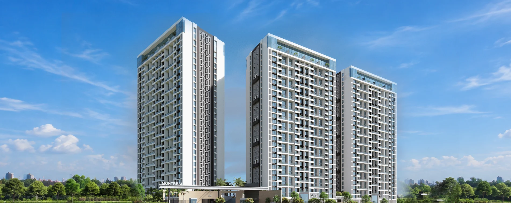

Examining the three multi-billion-rupee civic corridors transforming Charholi Budruk from an emerging suburb into Pune's premier global growth hub.

Sustained real estate compounding rarely comes from developer branding alone—it follows government capital expenditure in airports, ring roads, and arterial link expressways. Over the next five years, Charholi Budruk sits at the geometric intersection of Pune's three most impactful infrastructure upgrades:
Positioned just 4.8 km (10 mins) from Pride World City via Airport Road, the expanded Pune International Airport handles elevated domestic and international passenger capacity, multiplying residential demand from executives, pilots, and frequent flyers.
Passing within 1.8 km of the township, this 65-meter-wide express loop eliminates cross-city bottlenecks, slashing commute times to Chakan MIDC, Talegaon, Pimpri-Chinchwad, and the Mumbai-Pune Expressway.
Connecting Charholi directly toward Wagholi and Kharadi EON Free Zone / World Trade Center within 18 minutes, allowing IT employees to avoid Nagar Road bottlenecks while acquiring 35% larger homes per rupee spent.
Looking to capitalize on Charholi's infrastructure growth before the Ring Road interchange completes? Inspect Pride Valencia New Launch or compare pricing in the Charholi & Pune Market Report.
Complimentary executive sedan pickup from Pune Airport or home.